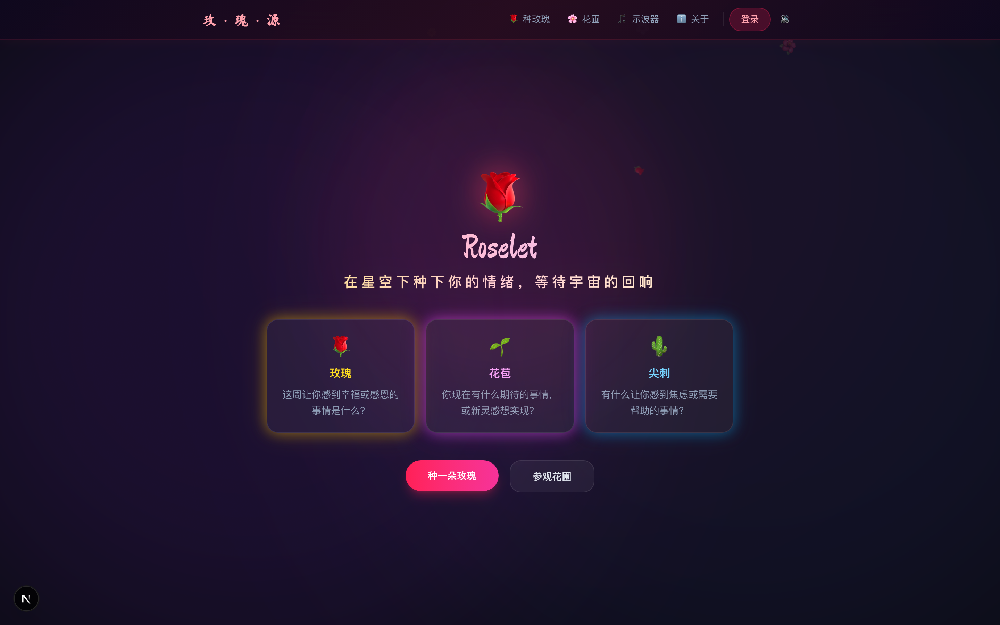
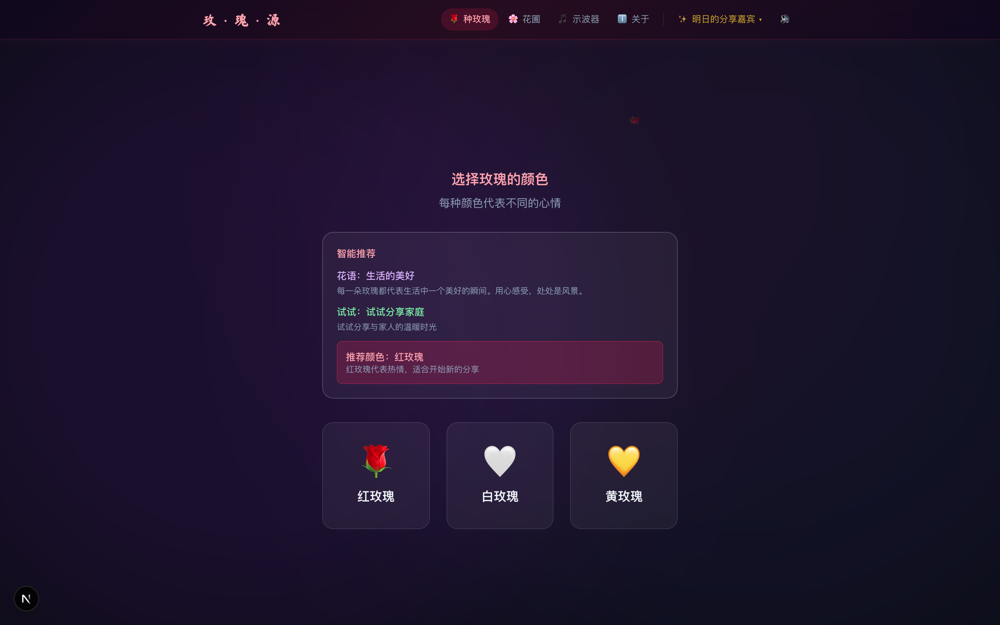
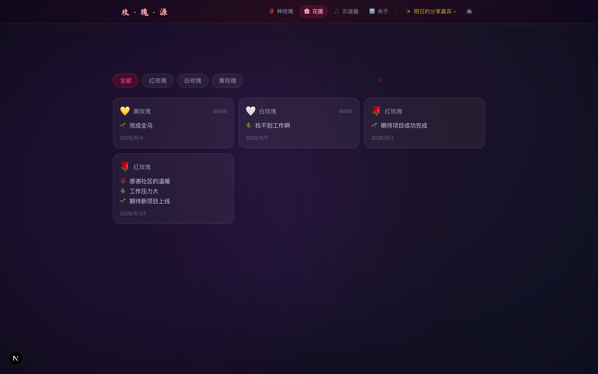
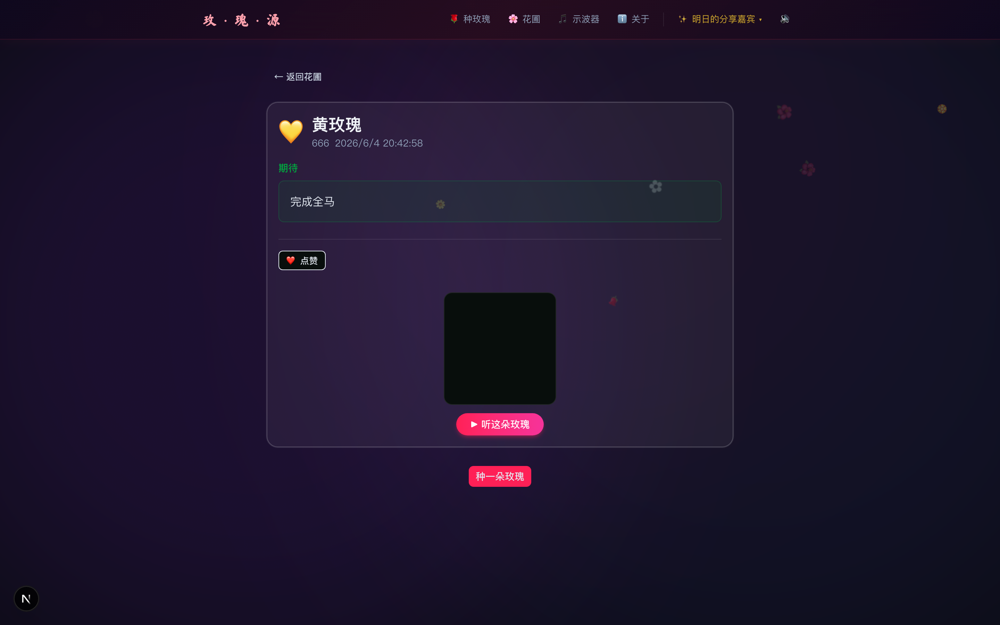

为社区种一朵玫瑰吧 —— 情绪仪式的数字花圃
一个经典的团队破冰方法——玫���代表感恩、尖刺代表焦虑、花苞代表期待。把它数字化，让社区在异步时空中持续「情绪破冰」。
用户扫码进入，看到规则说明，点击「种一朵玫瑰」。

选颜色（红/白/黄），依次填写三种情绪，点击「种下玫瑰吧」。

玫瑰种入花圃，各色玫瑰共同生长。AI 后台异步生成个性化回复。

点击任意一朵玫瑰查看详情，编辑/删除/点赞。

全部业务逻辑（情绪分析、推荐引擎、表单校验、状态机、粒子动画）在 Rust WASM 里，TypeScript 只是平台调用层 + 渲染壳。同一份 WASM 跨 Web 和小程序复用。461 个测试，90%+ 覆盖率。